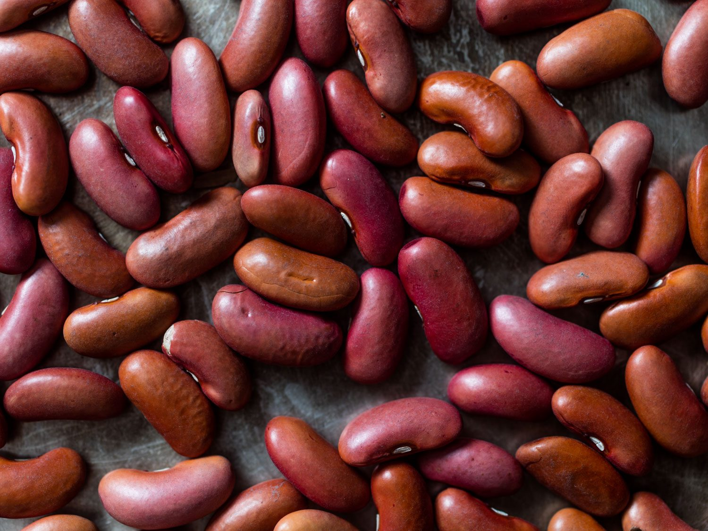
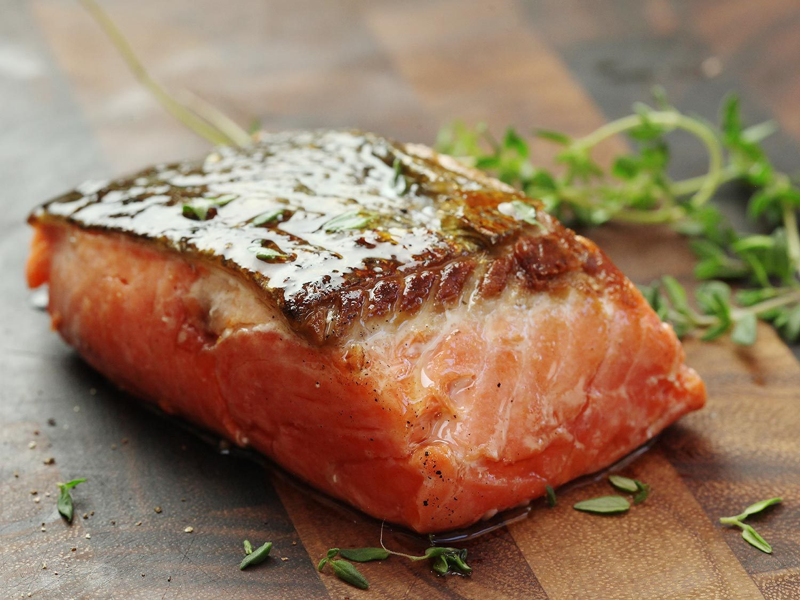
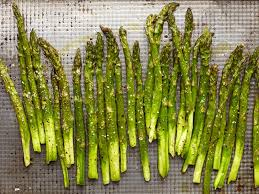
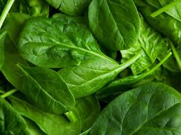

1 cup of beans (239 calories)
¾ 3-egg omelet (243 calories)
 1 glass of milk (125 calories)
1 glass of milk (125 calories)
1 salmon fillet (468 calories)
5 spears of asparagus (17 calories)
1 cup of white rice (205 calories)
2 servings of Sinigang na Bangus (336 calories)
1 cup of white rice (205 calories)
3 cups of spinach (123 calories)